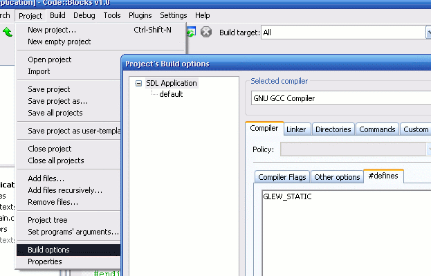
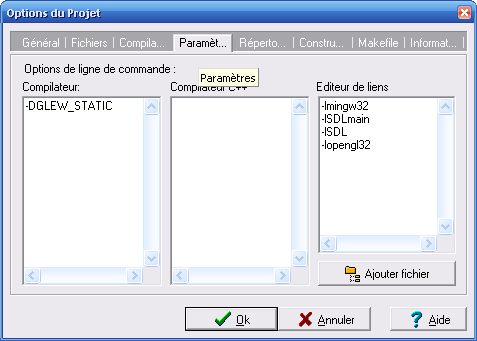

Peut-être n'avez-vous jamais entendu parler des extensions d'OpenGL ? Et bien il est grand temps que vous fassiez leur découverte, car croyez-moi, elles sont indispensables si vous voulez aller plus loin avec OpenGL.
Il nous faudra tout d'abord voir qui sont ces extensions, ce nom peut-être barbare ne doit pas vous faire peur ;) Puis nous apprendrons à les utiliser avec un exemple de code tout simple.
Entrons sans plus attendre dans le vif du sujet :)
Vous ne savez pas ce que c'est, pourtant vous lisez ce tutoriel et tenez à les découvrir. Eh bien soit.
Présentation du système d'extensions d'OpenGL
Comme chacun le sait, OpenGL est une API écrite en langage C proposant de multiples fonctionnalités pour effectuer un rendu 3D simplement.
Toutefois, certaines fonctionnalités ne sont pas accessibles directement via OpenGL, il va nous falloir passer par un tiers : les extensions. Une extension est, comme son nom l'indique, une extension, un petit quelque chose en plus. Cependant, il ne s'agit pas d'une fonctionnalité gadget dont on pourrait se passer, mais bien d'une fonction native indispensable pour la réalisation de certaines choses. Ces choses, qui ne seront pas traitées ici, sont entre autres les VBOs, les shaders, le multi-texturing, les occlusion queries, et j'en passe.
Les extensions permettent donc de gérer certaines fonctionnalités comme celles citées ci-dessus. Vous allez, via les extensions, utiliser ce que vous ne pouviez pas utiliser directement avec votre implémentation d'OpenGL.
Pourquoi doit-on passer par les extensions ? Ça a l'air bien compliqué...
Ça, c'est la question qui tue ^^
Nous allons nous représenter cela historiquement. À l'origine, OpenGL était en version 1.1, les fonctionnalités supportées alors sont peu nombreuses, OpenGL se résume à la projection d'un triangle à l'écran, bref, rien de très tremblant. Aujourd'hui, OpenGL est en version 2.1, les fonctionnalités supportées sont beaucoup plus nombreuses, l'API a subit de multiples intégrations de fonctionnalités avancées (shaders entre autres, ...) ; chouette, tout le monde est content.
Cependant, certaines implémentations, notamment sous Windows, sont toujours en version 1.1. Par implémentation, je veux parler des fichiers de développement : .h, .lib ou .a. Effectivement, certains OS ne proposent pas encore d'implémentation plus récente que la 1.1, ainsi il est impossible de pouvoir utiliser les nouveautés des versions supérieures d'OpenGL.
Afin de bénéficier sur ces OS des améliorations apportées à OpenGL depuis sa version 1.1, nous allons devoir utiliser les extensions.
La standardisation d'OpenGL
Les améliorations apportées à OpenGL depuis sa version 1.1 sont nombreuses et proviennent de plusieurs sources. Ces sources sont principalement les constructeurs de carte graphique. En effet, lorsqu'ils intègrent de nouvelles fonctionnalités à leurs cartes, les constructeurs doivent également, dans le cas d'OpenGL, créer une extension qui permettera de les exploiter.
Ce sont donc des constructeurs de carte graphique dont proviennent principalement les extensions, mais étant donné qu'il existe plusieurs entreprises de construction de carte graphique, une extension proposée par l'une ne sera pas forcément compatible avec l'autre, il faut donc qu'OpenGL soit standardisé afin que nous, petits programmeurs, puissions faire du code source portable :)
La standardisation d'OpenGL était assurée jusqu'à maintenant (fin 2006/début 2007) par l'ARB, qui était en fait constituée entre autres des "principaux représentants" des constructeurs de carte graphique. Aujourd'hui, la standardisation a été reléguée à The Khronos Group (Khronos Group).
Support or not support ?
Les extensions ne doivent pas être vue comme une méthode destinée à embêter le développeur inutilement, mais plutôt comme une astuce afin de permettre à chacun d'exploiter au maximum les fonctionnalités supportées par sa carte graphique sans attendre la mise à jour des fichiers de développement (qui se fait attendre chez certains OS).
Toutefois, votre carte graphique ne supporte peut-être pas toutes les extensions que vous lui demanderez de manger. Il est possible de voir lesquelles elle supporte et lesquelles elle ne supporte pas, il nous faudra d'ailleurs impérativement passer par cette étape de vérification afin d'être sûrs de ne pas faire planter notre programme, car l'utilisation d'une extension non supportée conduit à un comportement indéfini (on trouvera le plus souvent des erreurs de segmentation).
L'étape de la gestion du support est donc primordiale.
Et en pratique, comment on gère ça ?
Nous avons deux possibilités :
Demander l'extension via la SDL : Comme vous l'avez vu avec Kayl, la SDL offre un contexte OpenGL. Et grâce à cela elle permet aussi de manipuler les extensions d'OpenGL. Nous verrons que cette méthode est manuelle car elle demande un minimum de code.
Ne rien faire via GLEW : Vous avez bien lu, vous n'aurez rien à faire. En tout cas beaucoup moins qu'avec la SDL, la bibliothèque GLEW nous mâchera en fait tout le travail que nous faisions avant avec la SDL :soleil: . Lorsqu'on l'utilise pour manier les extensions d'OpenGL, on peut dire qu'on emploi une méthode de feignasses automatique car le code que nous devions écrire auparavant avec la SDL disparaîtra.
Hé mais alors pourquoi nous embêter à utiliser la SDL ?!
Il est bon que vous connaissiez toutes les méthodes, parfois on préférera l'une ou l'autre selon nos besoins.
Bon, passons aux choses sérieuses : nous voulons bénéficier d'une extension d'OpenGL parce qu'on la trouve super cool.
Oui, mais ça ressemble à quoi une extension ? C'est une boîte carrée qui contient plein de joujoux ? Presque :p
Une extension regroupe généralement des fonctions ainsi que des constantes symboliques qui nous permetteront d'exploiter la fonctionnalité que l'extension représente. Supposons que la gestion des couleurs des sommets soit une extension, alors l'extension serait composée des fonctions glColor*(), ces fonctions ne seraient pas disponibles dans gl.h et leur adresse mémoire serait inconnue. Pour finir, une extension a un nom. C'est très important de retenir cela, c'est grâce à ces noms que nous allons voir si une extension est supportée ou non par la carte graphique.
Vous devez retenir que : une extension est caractérisée par un nom qui englobe quelques fonctions et quelques constantes (parfois, seulement l'un ou l'autre).
Avant d'utiliser une extension, il est nécessaire de la charger, c'est-à-dire de récupérer les adresses mémoire des fonctions qui composent l'extension, connaître les prototypes de ces fonctions et aussi connaître les valeurs des constantes qu'elle utilise.
Quoi ? Charger une fonction ?
Je vous conseille fortement la lecture de l'excellent tutoriel de mleg sur les pointeurs de fonctions afin de vous éclaircir sur ce point. En effet, la lecture de ce tutoriel est préférable si vous voulez comprendre ce que vous ferez.
Et qu'est-ce qu'on fera ?
Vous chargerez des fonctions dynamiquement :) En effet, charger une extension revient à rechercher les adresses mémoire des fonctions qui la composent, ces adresses existent réellement si votre carte graphique supporte l'extension demandée et que votre pilote graphique est à jour. Normalement les adresses de fonctions sont fournies par votre implémentation d'OpenGL, mais si elle est trop ancienne, il vous faudra aller chercher ces adresses vous-même.
Ne vous inquiétez pas, ce n'est pas aussi dur que ça pourrait en avoir l'air ;)
Charger une extension
Avant de voir le chargement en lui-même (qui se résume d'ailleurs à une ligne de code :-° ) vous devez tout d'abord posséder l'en-tête glext.h nécessaire au bon fonctionnement des extensions. Vous pourrez trouver la dernière version de ce fichier sur le site de Silicon Graphics à cette adresse. Vous devrez placer ce fichier dans le répertoire include/GL/ de votre compilateur.
Ce fichier contient toutes les constantes ainsi que tous les types des fonctions disponibles pour OpenGL 2.1.
Les types des fonctions ?
Oui. Afin de charger une fonction, il va falloir stocker son adresse dans un pointeur de fonction d'un certain type. Ces types sont définis dans glext.h via des typedef.
Fonctionnement
Nous y voilà : comment charger une fonction ?
Nous allons en fait nous y prendre de la même façon que dans le tutoriel de mleg sur les pointeurs de fonctions :
créer une variable de stockage de notre fonction du type approprié ;
lui attribuer l'adresse de la fonction qu'elle devra représenter. Nous verrons comment procéder à cela dans la partie suivante ;
utiliser notre pointeur à notre guise dans notre programme OpenGL. Nous devrons prendre garde à rendre ce pointeur accessible par tous les fichiers de notre projet, ça sera donc une variable globale. Nous verrons cela plus bas lors de l'exemple de code.
Le type de notre pointeur, comme je l'ai dit plus haut, est défini dans glext.h. Le problème me direz-vous, c'est que chaque fonction a un prototype différent, donc il y a... un type pour chaque fonction o_O Diantre ! ça fait beaucoup ! :D Rassurez-vous, les noms donnés à ces types sont logiques et clairs, je vais justement vous les présenter.
Présentation de la syntaxe des types de fonctions
Les noms des types des fonctions que l'on peut charger ont une logique similaire à celle des noms de fonctions OpenGL simples. Voici plusieurs règles :
chaque nom est écrit 100% en majuscules ;
chaque nom est préfixé par PFN ;
chaque nom est suffixé par PROC ;
le nom du type est strictement égal au nom de la fonction auquel il correspond.
En fait si vous savez tout cela par coeur, alors il n'y a rien à savoir de plus. Nous verrons un exemple plus bas.
Présentation de la syntaxe des noms des extensions
Il y en a également une pour les noms des extensions. Voici par exemple un nom d'extension :
GL_ARB_multitexture
Premièrement, on remarque le préfixe GL_ bien connu des utilisateurs d'OpenGL, ensuite vient un autre préfixe (qui du coup n'en est plus vraiment un :-° ) : ARB. Ce second préfixe est intéressant, il représente en quelque sorte par qui l'extension est certifiée. Il existe également NV (pour nVidia), ATI (pour ATI), EXT (EXTension), SGIS (Silicon Graphics Inc., sans être totalement sûr), et quelques autres. À priori, mais ce n'est pas toujours le cas, une extension NV n'est pas supportée par ATI et vice-versa. Pour finir, multitexture décrit la fonctionnalité de l'extension, ici il s'agit donc de l'extension permettant de réaliser du multi-texturing.
Bien, nous allons commencer à coder sans plus attendre. J'espère que vous avez bien retenu tout ce que je vous ai dit dans la précédente partie. :p Faites chauffer vos cervelles !
Souvenez-vous de la première partie, je vous avais dit qu'il existait plusieurs méthodes pour charger une/plusieurs extension(s). Nous allons étudier ici la méthode manuelle, celle qui utilise la SDL. Nous chargerons une simple extension qui servira d'exemple, mais sachez que le chargement d'une extension, ou plus précisément des fonctions qui la composent, fonctionne de la même façon pour toutes les extensions.
Quelle extension allons-nous charger ?
GL_ARB_vertex_buffer_object par exemple :)
C'est quoi cette extension ??
Hélas, cela sort du cadre de ce tutoriel, je peux juste vous dire que c'est une extension qui peut s'utiliser dans un petit code source, d'où mon choix pour celle-ci.
1 - Vérifier le support de l'extension
Il est possible, via l'appel d'une fonction OpenGL, de connaître toutes les extensions supportées par votre matériel. Souvenez-vous également qu'une extension est représentée par son nom, en demandant à OpenGL de nous fournir la liste des extensions supportées, il va en fait nous renvoyer une énorme chaîne de caractères qui contiendra tous les noms des extensions supportées séparés par des espaces. Afin d'obtenir cette liste, il nous faut invoquer glGetString() avec comme paramètre GL_EXTENSIONS :
Notez bien que la fonction renvoie un const unsigned char* (const GLubyte* pour les intimes)
Nous voici à présent armés d'une énorme chaîne de caractères. Vous pouvez essayer de l'afficher si vous avez envie, voyez ce que j'obtiens personnellement :
C'est gros hein ? :p Notez qu'il est fort probable que vous en ayez plus ou moins, cela dépend de votre matériel.
Afin de vérifier si une extension est supportée, rien de plus simple : il suffit de chercher si son nom est présent dans cette chaîne (exts). Nous allons utiliser pour cela la fonction strstr() dont le prototype est disponible dans string.h :
#include <string.h>
/* recuperation de la liste des extensions supportees */
const unsigned char *exts = glGetString(GL_EXTENSIONS);
/* on regarde si exts contient ce qu'on demande... */
if(strstr((const char*)exts, nom_extension_recherchee) == NULL)
{
/* extension non supportee... :-( */
fprintf(stderr, "extension '%s' non supportee\n", nom_extension_recherchee);
}
else
{
/* OK, extension supportee */
}
Vous pourrez constater un cast barbare de notre chaîne exts lorsqu'on l'envoie à strstr() dans le if.
Voilà pour la gestion du support :) Nous emballerons tout cela dans une jolie fonction, un exemple de code complet sera disponible à la fin du tutoriel.
2 - Charger les fonctions de l'extension
L'extension GL_ARB_vertex_buffer_object contient plusieurs fonctions, mais pour l'exemple, nous nous contenterons de n'en charger qu'une seule : glGenBuffersARB(). Nous allons donc créer un pointeur pour stocker l'adresse de cette fonction :
PFNGLGENBUFFERSARBPROC glGenBuffers;
Si le type utilisé vous paraît bizarre, rappelez-vous la dernière partie : je vous avait présenté la syntaxe utilisée pour les types des pointeurs de fonction.
Ici, le nom que j'ai donné au pointeur ne contient pas ARB ; en effet, je trouve que ça serait trop lourd lors de l'utilisation, nous avons le choix des noms de nos fonctions, autant les réduire au maximum.
Bien, maintenant que nous avons notre pointeur, nous allons pouvoir passer à l'étape la plus rigolote : lui attribuer l'adresse de la fonction que l'on recherche.
Avec la SDL
C'est là que la SDL intervient, elle offre en effet une fonction permettant de récupérer les adresses mémoire des fonctions des extensions d'OpenGL. Cette fonction s'appelle SDL_GL_GetProcAddress(), voici son prototype :
void* SDL_GL_GetProcAddress(const char *fname);
fname : c'est le nom de la fonction dont on souhaite obtenir l'adresse.
Cette fonction renvoie un pointeur directe sur la fonction demandée, ou NULL si la fonction n'est pas supportée par le matériel. Voici comment nous allons l'utiliser dans notre cas :
Si vous utilisez directement le gestionnaire de fenêtres de votre système d'exploitation, sachez qu'il propose aussi une fonction pour charger une fonction d'une extension OpenGL. Que vous utilisiez WGL pour Windows ou GLX pour le gestionnaire de fenêtres X Window (Linux & MacOS), ils proposent chacun un équivalent à la fonction SDL_GL_GetProcAddress().
Voici les noms de ces fonctions :
WGL : wglGetProcAddress()
GLX : glXGetProcAddress()
Leur utilisation est identique à SDL_GL_GetProcAddress(), et leur nom est très similaire bref ; rien de très déroutant.
Note pour les curieux : la SDL utilise en fait ces fonctions, mais son avantage est d'utiliser la bonne selon votre OS, ce qui rend la SDL portable ;)
--------------------------
3 - Utilisation
Là c'est la fête ! :p
Nous avons à présent notre fonction glGenBuffers correctement chargée, il ne nous reste plus qu'à l'utiliser à notre convenance :)
Et les constantes symboliques propres à une extension, on les charge pas ?
Je vais vous le dire franchement : charger une constante est ridicule car elles ne varient pas selon l'implémentation d'OpenGL. Toutes les constantes dont vous pourrez avoir besoin sont définies dans glext.h
Attention toutefois, certaines demanderons à ce que vous les utilisiez avec le suffixe _ARB. Dans notre cas, l'extension que nous avons chargée utilise entre autre la constante GL_ARRAY_BUFFER, mais elle existe aussi sous le nom de GL_ARRAY_BUFFER_ARB. La première est à préférer car elle économise des lignes de code, et d'une manière générale : préférez toujours les noms les plus ergonomiques, les langages de programmation sont déjà assez barbares sans que vous ayez besoin d'en rajouter une couche ;)
Je vais à présent vous proposer une alternative intéressante dans la mesure où celle-ci est beaucoup plus simple à mettre en oeuvre que la technique vue précédemment.
En effet, jusqu'à maintenant, nous avons dû charger les fonctions d'une extension une par une, cette étape peut s'avérer être une vraie perte de temps.
Heureusement pour nous, de gentils programmeurs ont décidés de nous faire une jolie bibliothèque qui s'occuperait de ce boulot à notre place : GLEW.
GLEW permet de faire quoi concrètement ?
Elle vient en réalité remplacer les opérations de chargement que nous faisons auparavant avec la SDL, elle se charge de les faire à notre place, GLEW est surtout là pour vous faire gagner du temps ! Avec GLEW, plus besoin de charger les fonctions des extensions une par une, elle les charge pour vous automatiquement.
Et comment elle fait pour savoir si on a envie d'une extension ou pas ?
Elle ne le sait pas, elle charge toutes les extensions que votre matériel supporte. Rassurez-vous, cela ne consomme pas plus de mémoire, ce n'est pas un handicap, loin de là ;)
Attention cependant, vous ne pouvez pas décider de charger les extensions avec GLEW et avec la SDL, c'est soit l'un soit l'autre : ce sont deux techniques différentes. D'ailleurs, l'utilisation de GLEW ne nécessite pas de posséder l'en-tête glext.h
Bon, avant de pouvoir utiliser cette bibliothèque, il faut l'installer.
Installation de la bibliothèque GLEW
Sous Linux
Vous avez le choix :
Si vous utilisez Apt (pour les Debian-like comme Ubuntu), deux simples commandes sont à lancer :
sudo apt-get install libglew-dev
sudo apt-get install libglew1
Si vous préférez compiler GLEW vous-même, dans ce cas rendez-vous sur le site web de GLEW et téléchargez les sources.
Si vous avez un RedHat-like, dans ce cas je vous propose soit de compiler les sources vous-mêmes, soit de maîtriser votre gestionnaire de paquets mieux que moi :-° Si vraiment vous n'y connaissez rien, tentez ces commandes (en root) :
rpm -i libglew-dev
rpm -i libglew1
ou bien allez lire ce tutoriel sur l'installation de logiciels sous Linux rédigé par bluestorm.
Sous Windows
Téléchargez le code source de GLEW. (vous verrez pourquoi plus tard)
Décompressez l'archive et prenez tous les en-têtes présents dans le dossier include/GL/ (glew.h et wglew.h normalement) et placez-les dans le répertoire include/GL/ de votre compilateur. (C:\Program Files\CodeBlocks\include\GL\ pour Code::Blocks)
Création d'un projet utilisant GLEW
Les headers
Il est important (et logique) d'inclure avant tout l'en-tête de la bibliothèque GLEW dans nos codes source qui l'utiliseront.
Les habituelles inclusions pour OpenGL :
#include <GL/gl.h>
#include <GL/glu.h>
seront donc remplacées par la simple inclusion du fichier glew.h :
#include <GL/glew.h>
Vous inquiétez pas, ce petit remplacement de fichiers ne nuira pas du tout, glew.h s'occupe de tout ;)
Passons à présent à la configuration des projets.
Sous Linux
Rien de plus simple, il vous suffira de rajouter cette commande avec GCC : -lGLEW Elle permet, comme vous vous en doutez, de lier la bibliothèque GLEW. Voilà, rien de plus :)
Sous Windows
La création ainsi que la configuration d'un projet utilisant GLEW sont les mêmes sous Code::Blocks ainsi que sous Dev-C++.
Pour commencer, créez un simple projet SDL (SDL Application sous Code::Blocks, Window Application sous Dev-C++). Ajoutez vos codes source au projet ainsi que le fichier glew.c, présent dans le dossier src/ de l'archive contenant le code source de GLEW.
Quoi ? On va compiler le code source de cette bibliothèque ?
Oui effectivement. C'est en fait la seule solution que j'ai trouvée pour pouvoir utiliser GLEW sous Windows. Mais ne vous inquiétez pas, ce n'est pas une très grosse bibliothèque et par conséquent elle ne mettra pas beaucoup de temps à se compiler ;)
Ensuite, passons à la configuration du projet. C'est l'étape la plus rigolote. Comme nous avons inclus le code source de la bibliothèque GLEW directement dans notre projet, il va falloir préciser à GLEW qu'on ne l'utilisera pas sous forme de DLL. Pour cela, il nous faudra définir une macro dans tous les fichiers qui utiliseront glew.h, en gros : dans tous les fichiers du projet.
Simple, on rajoute un #define dans glew.h et c'est terminé !
Non, nous allons faire autrement, car glew.h ne fait PAS parti de notre projet, si vous l'avez inclus au projet, enlevez-le.
Pour définir une macro dans tous les fichiers du projet, nous allons utiliser une commande très simple du compilateur. Si vous pensez à -D, alors vous avez gagné ;)
Sous Code::Blocks, il faut aller dans le menu Project -> Build options -> onglet Compiler -> onglet #defines, puis entrer le nom de la macro que l'on souhaite définir dans le champ libre.
Et quelle est le nom de la macro qu'on veut définir d'ailleurs ?
GLEW_STATIC. Lorsqu'elle est définie, GLEW considère qu'il est utilisé directement au sein d'un projet (notre cas) et adapte donc son code source en fonction de cela. Voici un petit schéma pour illustrer la procédure sous Code::Blocks :

Pour Dev-C++, la procédure est quelque peu différente, mais le principe reste le même, dans le menu Projet -> Options du projet -> onglet Paramètres :

Notez qu'ici j'ai rajouté -D devant le nom de notre macro GLEW_STATIC, c'est parce que Dev-C++, contrairement à Code::Blocks, ne le rajoute pas automatiquement.
Et à quoi il sert ce -D ?
C'est une commande du compilateur, comme -Wall ou comme -lSDL ;) Ça veut dire en quelque sorte #define. Vous pouvez aussi donner une valeur à une macro que vous définissez, comme ceci : -DMA_CONSTANTE=2
Et le linker ?
On y touche pas, on garde celui que Kayl a montré dans son tutoriel, à savoir :
Code::Blocks
Dev-C++
mingw32 SDLmain SDL opengl32 glu32
-lmingw32 -lSDLmain -lSDL -lopengl32 -lglu32
Et voilà, votre projet est maintenant prêt à utiliser GLEW. En parlant d'utiliser GLEW, vous ne savez toujours pas comment il s'utilise, eh bien nous allons voir ça ;)
GLEW côté programmation
GLEW est une bibliothèque très simple d'utilisation comme nous allons le voir ;) En fait, elle ne "s'utilise" pas vraiment, il suffit juste de l'initialiser et alors vous pourrez utiliser les extensions d'OpenGL librement sans vous soucier de leur chargement.
Initialisation de GLEW
Etape très importante, c'est ici que serons effectués des "GetProcAddress" comme nous en avons fait avec la SDL. Si vous n'initialisez pas GLEW, votre programme plantera.
Pour initialiser GLEW, rien de particulier : une petite fonction est faite pour ça :
GLenum glewInit(void);
Comme toute initialisation, celle de GLEW peut échouer, d'où la valeur de retour.
La valeur de retour, parlons-en justement, c'est en fait un code d'erreur qui peut être analysé pour savoir si un problème est survenu ou non. Nous allons récupérer ce code d'erreur dans une variable, nous analyserons ensuite cette variable pour savoir si elle représente un code d'erreur, si elle en représente un, nous la donnerons à manger à une fonction de GLEW qui nous retournera un message. (sous forme de chaîne de caractères)
premièrement, la constante utilisée pour savoir si code représente un code d'erreur ou non. GLEW_OK représente donc une valeur de retour qui sera employée si aucune erreur est survenue lors de l'initialisation ;
deuxièmement, la fonction glewGetErrorString(), qui retourne un message d'erreur d'après un code donné. Cette fonction renvoie un const unsigned char*.
Voilà pour l'initialisation.
Utilisation de GLEW
Rien de particulier à faire, sachez juste qu'à présent vous avez accès à toutes les fonctions de toutes les extensions supportées par votre matériel :)
En parlant d'extension supportée, si vous utilisez GLEW, préférez la fonction glewIsSupported() pour vérifier si une extension est supportée :
GLboolean glewIsSupported(const char *name);
name : nom de l'extension recherchée.
Cette fonction renvoie GL_TRUE (qui vaudra 1 généralement) si l'extension est supportée, GL_FALSE (0) sinon. Notez que cette fonction attend le nom d'une extension sous forme d'une chaîne de caractères, "GL_ARB_multitexture" par exemple.
Maintenant que je vous ai rempli le cerveau, voyons s'il n'y a pas eu de fuites durant le remplissage :D La gestion des extensions est rarement chose aisée pour un débutant, le besoin de quelques exemples de code se fait ressentir.
Les exemples présenterons un petit gestionnaire d'extensions très simple.
Ce gestionnaire devra pouvoir utiliser GLEW ou la SDL pour charger les extensions, au choix. Ce choix se fera lors de la compilation via le préprocesseur.
Que fera ce gestionnaire ?
Il englobera tout ce que nous avons appris jusqu'à maintenant :
chargement des extensions avec la SDL ;
initialisation de GLEW ;
vérification du support d'une extension via GLEW ou manuellement.
Bien entendu, il n'utilisera pas GLEW et SDL en même temps (c'est impossible), il utilisera soit l'un, soit l'autre.
Présentation de l'interface (.h)
Notre gestionnaire restera très simple, il n'est là qu'à titre d'exemple pour vous. Nous nous contenterons de lui attribuer deux fonctions :
InitExtensions() : cette fonction sera chargée d'initialiser le gestionnaire ;
CheckExtension() : cette fonction aura pour but de vérifier si une extension est supportée.
Voici à quoi pourrait ressembler l'en-tête de notre gestionnaire :
Souvenez-vous, je vous avait dit que notre gestionnaire devait être compatible avec GLEW et SDL pour le chargement des extensions. Cet en-tête s'adaptera à une utilisation de GLEW pour peu que l'on définisse la macro USE_GLEW. À l'inverse, cet en-tête est compatible avec une utilisation de la SDL si USE_GLEW n'est pas définie.
Tout d'abord, remarquez que ce code se charge d'inclure les bons en-têtes des bibliothèques, glew.h si USE_GLEW est définie, gl.h + glext.h sinon. (on pourrait rajouter glu.h, mais comme je n'utilise aucune fonction GLU je ne l'ai pas mis) Avec cette conception, tous nos fichiers sources qui voudrons utiliser OpenGL et ses extensions n'auront qu'à inclure cet en-tête, tout est dedans :)
Ensuite, vient une variable extern. C'est un pointeur sur une fonction d'une extension, déclaré avec le mot clé extern.
A la suite de ce pointeur vous pourrez, en suivant le même modèle, rajouter d'autres pointeurs vers des fonctions d'extensions dont vous pourrez avoir besoin. Ici, je n'ai mis qu'un pointeur pour simplifier l'exemple.
Pour finir, nous avons les prototypes de nos fonctions, Init() et Check() (dorénavant je les appellerai comme cela, c'est beaucoup plus court).
Bien, maintenant que nous avons vu l'interface de notre gestionnaire, voyons à quoi pourrait ressembler le code source de nos deux fonctions.
Le code source (.c)
Tout d'abord, c'est ce code source qui contiendra nos véritables pointeurs de fonction. Donc, après l'inclusion des en-têtes nécessaires, je vais déclarer nos pointeurs (en l'occurrence, nous en avons qu'un, glGenBuffers() ) :
Encore une fois, le préprocesseur est présent. En effet, si nous utilisons GLEW, celui-ci se chargera de nous fournir les pointeurs de fonction automatiquement (jetez un oeil au fichier glew.h :D ), en revanche si nous chargons nos fonctions manuellement, il va nous falloir déclarer nos pointeurs nous-mêmes (comme nous l'avons vu dans la 3eme partie de ce tutoriel).
Fonction InitExtensions()
Bien, voyons maintenant le code source de notre fonction Init(). Celle-ci devra s'occuper de rendre nos pointeurs de fonction opérationnels (valides quoi). Pour une utilisation des extensions avec la SDL, nous placerons dans la fonction Init des SDL_GL_GetProcAddress(). Avec GLEW c'est plus simple, nous n'aurons qu'à l'initialiser et le tour sera joué :
Notre fonction d'initialisation peut bien sûr échouer, c'est pour cela qu'elle retourne une valeur, nous n'aurons ensuite qu'à la tester pour savoir si Init() a réussi ou pas.
A part ça rien de particulier, pour GLEW un simple appel à glewInit(), et pour la SDL on charge simplement toutes nos fonctions. Notez que pour rajouter des fonctions au chargement avec la SDL nous ferons comme ceci :
Voilà pour la fonction d'initialisation. Vous comprenez à présent pourquoi l'usage de GLEW est recommandé : cela vous permet d'économiser des lignes de code (et donc du temps), car avec la SDL vous allez devoir charger manuellement chaque fonction d'extension, GLEW le fait tout seul par le simple appel à sa fonction d'initialisation.
Fonction CheckExtension()
Rien de sorcier là non plus. Avec la SDL, nous allons procéder de la même façon que je l'ai indiqué dans la 3eme partie de ce tutoriel, nous allons récupérer la liste des extensions supportées, rechercher l'extension demandée dans cette liste, puis si elle s'y trouve, l'extension est supportée, sinon elle ne l'est pas.
Pour GLEW, nous utiliserons simplement la fonction glewIsSupported() :
La fonction Check() renvoie un booléen, ainsi nous n'aurons qu'à le tester directement dans un if.
Exemple d'utilisation
Si vous vous souvenez de ce que je vous ai dit, vous devriez savoir qu'il est obligatoire d'initialiser les extensions uniquement après la création du contexte OpenGL, donc, avec la SDL, après l'appel de la fonction SDL_SetVideoMode().
Notre fonction Init() devra donc être appelée aprèsSDL_SetVideoMode() :
main.c (exemple) :
SDL_Init(SDL_INIT_VIDEO);
SDL_SetVideoMode(640, 480, 32, SDL_OPENGL);
if(InitExtensions() > 0)
{
SDL_Quit();
exit(EXIT_FAILURE);
}
/* maintenant on peut appeler CheckExtension pour savoir
si une extension qu'on voudra utiliser est supportee */
if(CheckExtension("GL_ARB_super_extension"))
{
/* utilisation */
}
else
{
/* ... */
}
Téléchargements
Voici un programme complet afin que vous puissiez tester si vous avez correctement mis en place les extensions.
Par défaut, les projets utilisent la SDL pour le chargement des extensions, pour tester GLEW, vous n'aurez qu'à définir USE_GLEW :
Avec Code::Blocks ou Dev-C++ : procédez de la même façon que lorsque vous avez défini GLEW_STATIC (voir Création d'un projet utilisant GLEW).
Avec le Makefile : dans le Makefile, ajoutez à la variable CFLAGS la commande -DUSE_GLEW :
CFLAGS=-O2 `sdl-config --cflags` -DUSE_GLEW
puis recompilez.
Voici la liste des téléchargements (l'exécutable Linux utilise la glibc 2.4) :
Sous Windows : avez-vous bien les fichiers glew.h et wglew.h dans le dossier include/GL/ de votre compilateur ?
Sous Linux : avez-vous bien le fichier libGLEW.so dans le répertoire /usr/lib/ (ou /usr/local/lib/) ?
Si aucune de ces solutions ne convient, je vous invite à venir exposer votre problème sur le forum C avec le tag [GLEW] dans le titre du sujet. Par la même occasion, j'en profite pour faire un peu de pub à un très bon tutoriel sur comment bien demander de l'aide sur internet ?, rédigé par iKs.
Et voilà, maintenant vous savez tout sur les extensions d'OpenGL :)
Bien sûr, vous ne connaissez peut-être pas d'extension à utiliser pour le moment, mais au moins maintenant lorsque vous apprendrez à vous servir d'une extension, vous saurez la charger correctement.
Quelques liens
Avant de nous quitter, je vous propose une liste de quelques liens qui risquent de vous être bien utiles.